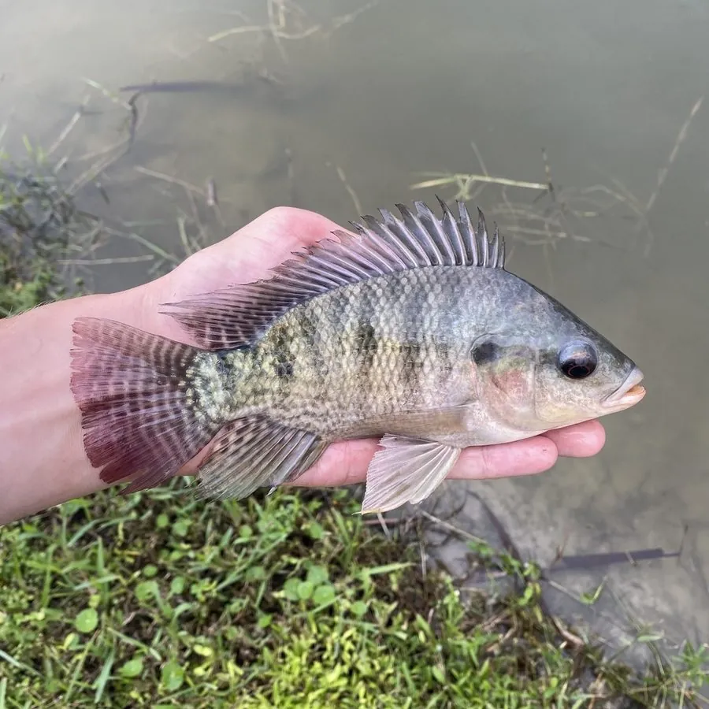

鱼类 · 动物界
尼罗罗非鱼 Oreochromis niloticus

原产非洲尼罗河流域的慈鲷，适应力强、生长快、产量高，是全球最重要的养殖鱼类之一，但在多地被列为入侵物种。
- 分类
- 门脊索动物门纲硬骨鱼纲目鲈形目科慈鲷科属罗非鱼属
- 栖息环境
- 非洲及引种地区的河流、湖泊、池塘和水库，耐低氧、耐盐度变化
- 地理分布
- 原产非洲尼罗河流域和东非湖泊，全球热带、亚热带地区广泛养殖
- 保护级别
- 暂无评估；中国未列入国家重点保护野生动物名录（重要养殖鱼类）
物种志
尼罗罗非鱼体呈卵圆形、侧扁，背鳍很长、前部有硬棘；体色灰绿或蓝灰，体侧有数条垂直的黑色横带，幼鱼时格外明显，背鳍和尾鳍上常有黑白相间的斑点。成鱼体长一般 20–30 cm，最大约 40 cm，体重可达 1 kg 以上。
尼罗罗非鱼原产非洲尼罗河流域及东非湖泊，如今被引入全球热带和亚热带地区养殖。它是杂食性鱼类，靠细密的鳃耙滤食浮游生物，也吃藻类、水生植物、小型无脊椎动物和有机碎屑。繁殖方式十分特别：雌鱼把受精卵含在口中孵化，刚孵出的幼鱼遇到危险时也会躲进母亲口中。尼罗罗非鱼适应力强，耐低氧、耐盐度变化，养殖逃逸个体在许多水域建立了野外种群，与本土鱼类争夺食物和产卵地，被列为入侵物种。中国自 20 世纪 70 年代引进，如今是产量最大的养殖鱼类之一。目前它没有IUCN 的正式评估，中国未将其列入国家重点保护野生动物名录。
形态与习性
- 食性杂食性，滤食浮游生物，也吃藻类、水生植物和有机碎屑
- 体长一般 20–30 cm，最大约 40 cm
- 体重常见 0.5–1 kg，最大可超过 2 kg
- 繁殖雌鱼口孵，把受精卵和幼鱼含在口中保护
- 寿命约 5–8 年
- 水温适宜水温 20–30 ℃，耐低氧能力较强
趣味知识
- 尼罗罗非鱼是口孵鱼类，雌鱼把卵和刚孵化的幼鱼含在嘴里保护。
- 它的鳃耙细密，能过滤水中的浮游植物，被称为“水中清道夫”。
- 罗非鱼在不少国家成为入侵物种，与本土鱼类争夺食物和产卵地。